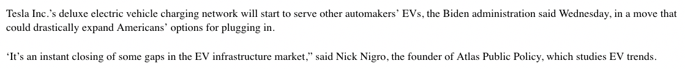

Analysis of IR
PS 1599 | Week 13: Coordination
University of Pittsburgh
Administration
Office hours, aklin@pitt.edu
Exam
Shorter class today
Brief reminder
Research paper: who is supportive/unsupportive of clean energy (age, education, gender, etc.)
Policy paper: suggest policies to deal with the problems identified in Research Paper
Chuang’s office hours: Fr 12-2:30pm
Next two Mondays: drop-in session for your final projects
Lots of material on course website!
What did we talk about
last time?
Problem-solving addresses…
- Natural problems
- Individual problems
- Social problems
Social problems have many causes
So far: public goods/externalities
Next: coordination and commitment problems
Matters for policy
Coordination problems
Definition
People benefit if they coordinate their behavior
I don’t care strongly what we do as long as we adapt to each other
Canonical example: driving side
When actors fail: coordination failure
Differs from public goods
no incentive to free-ride
problem is to select an equilibrium
Coordination problems in markets
- Format wars: sectors often create industry-wide formats
Consumers don’t care which format (smaller=better)
Important for firm planning
Eg: blu-ray vs HD DVD, QWERTY
- Network effects
= value to consumers goes up w/ more consumers
Eg: phones, vaccines, Playstation, Minidiscs
- Both relevant for sustainable technology
Case 1: network effects
Consider electric vehicles (EV) and ignore externalities
Still a challenge to switch from gas to EV
Reason: both EV and gas require infrastructures
Infra is only provided if enough customers exist
If not: useless car
| Jane John | Gasoline car | Electric car |
|---|---|---|
| Gasoline car | 1, 1 | 0, 0 |
| Electric | 0, 0 | 1, 1 |
- Equilibria?
| Jane John | Gasoline car | Electric car |
|---|---|---|
| Gasoline car | 1, 1 | 0, 0 |
| Electric | 0, 0 | 2, 2 |
- Equilibria?
| Jane John | Gasoline car | Electric car |
|---|---|---|
| Gasoline car | 2, 2 | 0, 0 |
| Electric | 0, 0 | 1, 1 |
- Equilibria?
Assume you’re working for the White House.
How would you ensure a transition to EV?
Policies
Classic (same solutions as for public goods)
Pigouvian tax on cars
Subsidies for EV
Coordination-specific solutions
Subsidy for infrastructure (charging stations)
R&D on flexible charging stations
Regulations on new apartment buildings
Law. Rule out one some options. Eg EU and gasoline cars
Services. Build charging stations.
Money. Subsidize EV
Taxes. Tax gasoline cars
Moral. ?
Source: Wall Street Journal (Feb 14, 2023)

Case 2: format wars
Electric vehicles must be charged
Currently: <300 miles
Problem: brands have competing charging standards
Equivalent: having different plugs based on your electric supplier
Source: https://electrek.co.
| Tesla BMW | Tesla supercharger | CCS |
|---|---|---|
| Tesla supercharger | 2, 1 | 0, 0 |
| CCS | 0, 0 | 1, 2 |
Two equilibria
But distributional impact
Assume you’re working for the White House.
How would you select an EV standard?
Difficult choice: can the White House predict the future?
One possibility: let the market decide (like blu-ray vs HD DVD)
Problem: slows down the transition to EV
Can use technical criteria. But same problem: no idea which format is superior in the long term
Maybe best (?): force industry to pick
Law. Impose to all a standard that you think is superior
Services. Build charging stations.
Money. Compensate the loser
Taxes. Compensate the loser (lower taxes)
Moral. ?
Source: White House, February 15, 2023
Conclusion
Public goods are not the only social problems
Coordination failures are also important
Relevant for sustainable technology
Network effects
Format coordination
Policies are different from those for public goods
Implication for your projects
Commitment problems
Definition
Actors sometimes make promise about the future
These promises might not be credible
Eg: teenage wanting to go out tonight and clean room tomorrow
Problem: knowing this, actors will make worse decisions today
Eg: peace treaty
Despite peace being superior, actors with foresight will not go for it
Problem: risk of being vulnerable later if you agree to disarm now
Thus: need to find a way to generate a credible commitment
How would you overcome this
commitment problem?
Law. Joint control of gov/legislature? Legal institutions? UN Blue Helmets?
Services. Shift control of military?
Money. Provide separatist resources to re-buy weapons if needed?
Taxes?
Moral: publicly tie your hands.
Risk and sustainable industries
Commitment problems are common in new industries
Need gov support to grow
But govs come and go
Creates political risks
Issue: who will invest in clean tech if govs might pull the plug later?
Case: off-grid renewable energy
About 700m w/o electricity
Could be powered w/ coal…
Better solution: off-grid tech
Electricity is generated locally
In practice: off-grid mostly provided by private firms
Material (turbines, solar panels, etc.)
Sales (connection of households, firms)
Requires public support
Two problems
Governments change. Democracy!
Customers: unwillingness to pay bills
In India: both problems very relevant
Source: Fortune, January 21, 2020
How can you overcome this commitment problem?
From the side of (a) the gov and (b) the firm…
Government strategies
Law: legal rules (eg SupC vs gov), law enforcement (customers)
Services: ?
Money: fund gov projects upfront
Taxes?
Morality: public commitments/audience costs
Firm strategies
Law: n/a (reserved to governments)
Services: smart metering
Money: upfront payment, pay-as-you-go
Taxes: n/a (reserved to governments)
Morality?
Conclusion
Credible commitments are very important
Yet different from coordination/public goods
Dynamic problem
Requires to find credible commitments
Industrial policy and climate change
Three problems: public goods, coordination, commitment
Can be addressed individually
But that’s sometimes insufficient
Solution (?): industrial policy
History
19th century: conservation
Up to 1960s: other priorities (WWI, Great Depression, WWII, Cold War)
Since 1960s: growth of environmental movement
Since 1980s: concern about climate change and ozone layer
To keep warming limited: need to reach net-zero by 2050
Wicked problem: dom/global public goods, coordination, commitments
Climate policy
Clinton: international climate treaty (Kyoto Protocol)
- Treaty to deal w/ global negative externalities
- Tech transfer to deal w/ domestic social problems
Congress: domestic carbon pricing
Failures in 2003, 2005, 2008
Waxman–Markey: carbon trading scheme (2009)
Problem: all these efforts failed
Domestic: no carbon pricing
International: very soft global rules
Political problem: hard to mobilize voters
Taxes create distributional effects
Hard for green voters to vote for others (credibility)
Skocpol (2013)
Solution
Potential solution: industrial policy
Idea: vast set of policies to jumpstart an industry
Deals with all 3 problems:
Public goods: public resources
Coordination: creates entire markets
Commitment: creates pro-policy constituencies
Nahm (2021)
Biden
Three packages passed 2021-2022 (law)
- Infrastructure Investment and Jobs Act (IIJA)
- CHIPS and Science Act (CHIPS)
- Inflation Reduction Act (IRA)
Total: over $500b public investments (service), research (service), and tax credits (money/tax) for clean energy
Economic effects
Makes clean energy cheaper via subsidies
Makes clean energy cheaper via tech innovation
Incentivizes private sector
Addresses public good and commitment problems
What about commitment problem (by government)?

Source: Guardian, February 22, 2023
Not just about economics
Politics: create strong pro-climate policy constituencies
Important: could overcome commitment problem depending on next elections
But could backfire: picking winners, inefficiencies, consumer costs
Conclusion
Major social problems: public goods, coordination, commitment
Policies can address each
But when all happen together: wicked problem
One solution: industrial policy
Pessimism: rarely works as intended: larger the policy, the higher the odds that something goes wrong…
Questions?
aklin@pitt.edu
Source for title page painting: Alberto Rossi, The Arab market in kalona